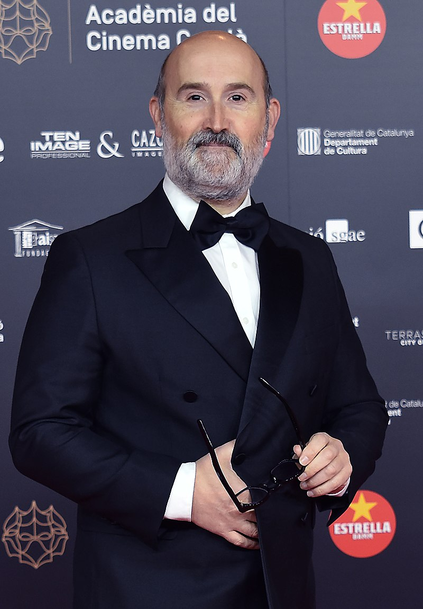

Javier Cámara Rodríguez
Actor español, nacido en la Rioja el 19 de Enero de 1967
En esta web podrás encontrar información sobre Javier Cámara a través de varios links:
BIOGRAFÍA
FILMOGRAFÍA Y PREMIOS